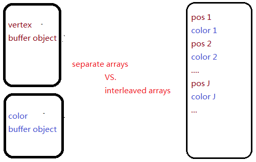
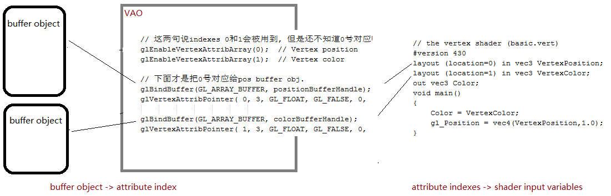

[OpenGL 4.0 Shading Language Cookbook] - Chapter 1
Profiles: Core vs. Compatibility
OpenGL 3.0版本引入了deprecation model模型. 被标记为deprecated的函数或者功能, 意味着在将来的版本中会被removed去掉. 例如immdediate mode rendering使用的glBegin/glEnd在3.0版本中标记为deprecated而在3.1版本中被去掉.
为了backwoods compatibility后兼容, OpenGL 3.2版本引入了compatibility profiles的概念.
Core profile: 目标是某一个特定的版本, older features removed.
Compatibility profile: 为了后兼容, older features 还在的.
有些地方有full vs. forward compatible context这些概念, 听上去有点令人confusing. 跟上面的core/compatibility概念是有些不一样的.
Forward compatible: 只包含core里面的函数, 而不包含已经被deprecated的函数.
Full: 支持所选择版本的所有函数, 包括deprecated函数.
可见跟上面的core/compatibility profile概念并不矛盾.
在代码中选择一个core or compatibility profile是依赖于window system API的. 书的第一版本是用Qt的, 但是书在github提供的代码是用GLFW:
// Select OpenGL 4.3 with a forward compatible core profile.
glfwWindowHint( GLFW_CONTEXT_VERSION_MAJOR, 4 ); //这两行先选择版本version
glfwWindowHint( GLFW_CONTEXT_VERSION_MINOR, 3 );
glfwWindowHint( GLFW_OPENGL_FORWARD_COMPAT, GL_TRUE ); // forward compatible.
glfwWindowHint( GLFW_OPENGL_PROFILE, GLFW_OPENGL_CORE_PROFILE ); // core profile.
Determining the GLSL and OpenGL version
程序为了支持很多不同的系统, 需要知道当前driver驱动所支持的OpenGL和GLSL版本. 容易, glGetString and glGetIntegerv.
How to do it...
void dumpGLInfo(bool dumpExtensions) {
const GLubyte *renderer = glGetString( GL_RENDERER );
const GLubyte *vendor = glGetString( GL_VENDOR );
const GLubyte *version = glGetString( GL_VERSION );
const GLubyte *glslVersion = glGetString( GL_SHADING_LANGUAGE_VERSION );
GLint major, minor;
glGetIntegerv(GL_MAJOR_VERSION, &major);
glGetIntegerv(GL_MINOR_VERSION, &minor);
printf("-------------------------------------------------------------\n");
printf("GL Vendor : %s\n", vendor);
printf("GL Renderer : %s\n", renderer);
printf("GL Version : %s\n", version);
printf("GL Version : %d.%d\n", major, minor);
printf("GLSL Version : %s\n", glslVersion);
printf("-------------------------------------------------------------\n");
if( dumpExtensions ) {
GLint nExtensions;
glGetIntegerv(GL_NUM_EXTENSIONS, &nExtensions);
for( int i = 0; i < nExtensions; i++ ) {
printf("%s\n", glGetStringi(GL_EXTENSIONS, i));
}
}
}
Compiling a shader
GLSL的编译器是在OpenGL库里面的, shders只能是在一个正在running的OpenGL程序的context里面才能被compiled编译. 当前还没有外在的工具能生产pre-compiling GLSL shader 和/或 shader program.
cj: 上面说“GLSL编译器是在OpenGL库里面的”, 是不是指在OpenGL driver驱动里面呢? 我查到关于EVEmulate的网页上有"By default, the OpenGL Shading Language (GLSL) compiler in the NVIDIA OpenGL driver will generate code targeting the NVIDIA GPU installed in your system. " 所以在OpenGL里面应该就是指在OpenGL驱动里面的意思.
OpenGL 4.1加入新的功能, 可以把编译过的shader programs保存到文件, 这样通过加载pre-compiled shader programs就可以避免因为shader compilation引入的overhead.
下来来看作者在github中提供例子:
void SceneBasic::initScene()
{
//////////////////////////////////////////////////////
/////////// Vertex shader //////////////////////////
//////////////////////////////////////////////////////
// Load contents of file
ifstream inFile( "shader/basic.vert" );
if (!inFile) {
fprintf(stderr, "Error opening file: shader/basic.vert\n" );
exit(1);
}
std::stringstream code;
code << inFile.rdbuf();
inFile.close();
string codeStr(code.str());
// Create the shader object
// glCreateShader 返回的常常被称为handle
GLuint vertShader = glCreateShader( GL_VERTEX_SHADER );
if (0 == vertShader) {
fprintf(stderr, "Error creating vertex shader.\n");
exit(EXIT_FAILURE);
}
// Load the source code into the shader object
const GLchar* codeArray[] = {codeStr.c_str()};
glShaderSource(vertShader, 1, codeArray, NULL);
// Compile the shader
glCompileShader( vertShader );
// Check/Verify the compilation status
GLint result;
glGetShaderiv( vertShader, GL_COMPILE_STATUS, &result );
if( GL_FALSE == result ) {
fprintf( stderr, "Vertex shader compilation failed!\n" );
GLint logLen;
glGetShaderiv( vertShader, GL_INFO_LOG_LENGTH, &logLen );
if (logLen > 0) {
char * log = (char *)malloc(logLen);
GLsizei written;
glGetShaderInfoLog(vertShader, logLen, &written, log);
fprintf(stderr, "Shader log: \n%s", log);
free(log);
}
}
//////////////////////////////////////////////////////
/////////// Fragment shader //////////////////////////
//////////////////////////////////////////////////////
// Load contents of file into shaderCode here
ifstream fragFile( "shader/basic.frag" );
if (!fragFile) {
fprintf(stderr, "Error opening file: shader/basic.frag\n" );
exit(1);
}
std::stringstream fragCode;
fragCode << fragFile.rdbuf();
fragFile.close();
codeStr = fragCode.str();
// Create the shader object
GLuint fragShader = glCreateShader( GL_FRAGMENT_SHADER );
if (0 == fragShader) {
fprintf(stderr, "Error creating fragment shader.\n");
exit(1);
}
// Load the source code into the shader object
codeArray[0] = codeStr.c_str();
glShaderSource( fragShader, 1, codeArray, NULL );
// Compile the shader
glCompileShader( fragShader );
// Check compilation status
glGetShaderiv( fragShader, GL_COMPILE_STATUS, &result );
if (GL_FALSE == result) {
fprintf( stderr, "Fragment shader compilation failed!\n" );
GLint logLen;
glGetShaderiv( fragShader, GL_INFO_LOG_LENGTH, &logLen );
if (logLen > 0) {
char * log = (char *)malloc(logLen);
GLsizei written;
glGetShaderInfoLog(fragShader, logLen, &written, log);
fprintf(stderr, "Shader log: \n%s", log);
free(log);
}
}
linkMe(vertShader, fragShader);
...
}
glShaderSource: 一旦glShaderSource返回, source code就被copied到OpenGL internal memory, 于是codeArray就可以被释放freed.
其中一个参数是GLchar 类型. GLchar *表示一个字符串, GLchar 表示array of GLchar , 是一个数组啊! 所以你看到
const GLchar codeArray[] = {codeStr.c_str()};
glDeleteShader: 释放shader所用的memory, invalidate its handle. 如果shader是attach到一个program object, 那么这个shader不会被立刻delete, 而是会被标记为等从program object中detached的时候再删除.
Linking a shader program
直接看代码:
void SceneBasic::linkMe(GLint vertShader, GLint fragShader)
{
// Create the program object
GLuint programHandle = glCreateProgram();
if(0 == programHandle) {
fprintf(stderr, "Error creating program object.\n");
exit(1);
}
// Bind index 0 to the shader input variable "VertexPosition"
//glBindAttribLocation(programHandle, 0, "VertexPosition");
// Bind index 1 to the shader input variable "VertexColor"
//glBindAttribLocation(programHandle, 1, "VertexColor");
// Attach the shaders to the program object
glAttachShader( programHandle, vertShader );
glAttachShader( programHandle, fragShader );
// Link the program
glLinkProgram( programHandle );
// Check for successful linking
GLint status;
glGetProgramiv( programHandle, GL_LINK_STATUS, &status );
if (GL_FALSE == status) {
fprintf( stderr, "Failed to link shader program!\n" );
GLint logLen;
glGetProgramiv( programHandle, GL_INFO_LOG_LENGTH, &logLen );
if (logLen > 0) {
char * log = (char *)malloc(logLen);
GLsizei written;
glGetProgramInfoLog(programHandle, logLen, &written, log);
fprintf(stderr, "Program log: \n%s", log);
free(log);
}
} else {
// install the program into the GL pipeline
glUseProgram( programHandle );
}
}
Sending data to a shader using per-vertex attributes and vertex buffer objects
旧版本OpenGL中(先于3.0版本): 每一样的顶点信息都有各自的通道channel到pipeline,
glVertex/glTexCoord/glNormal or
glVertexPointer/glTexCoordPointer/glNormalPointer.
在shader中是通过一些内置变量build-in variables, 如gl_Vertex and gl_Normal, 来访问这些值. 这种方式在3.0版本中被mark为deprecated, 而在后版本中就没有了. 现在提供vertex信息就必须使用generic vertex attributes, 通常跟(vertex) buffer object一起用.
OpenGL program -> vbo with vertex attributes -> shaders
下面的代码recipe画一个三角形, 每个顶点一个颜色, 颜色在vs输出后被blend后进入fs.
// the vertex shader (basic.vert)
#version 430
layout (location=0) in vec3 VertexPosition;
layout (location=1) in vec3 VertexColor;
out vec3 Color;
void main()
{
Color = VertexColor;
gl_Position = vec4(VertexPosition,1.0);
}
// the fragment shader (basic.frag)
#version 430
in vec3 Color;
layout (location=0) out vec4 FragColor;
void main() {
FragColor = vec4(Color, 1.0);
}
void SceneBasic::initScene()
{
// vertex shader and fragment shader, and shader program object .
...
/////////////////// Create the VBO ////////////////////
float positionData[] = {
-0.8f, -0.8f, 0.0f,
0.8f, -0.8f, 0.0f,
0.0f, 0.8f, 0.0f };
float colorData[] = {
1.0f, 0.0f, 0.0f,
0.0f, 1.0f, 0.0f,
0.0f, 0.0f, 1.0f };
// Create and populate the buffer objects
GLuint vboHandles[2];
glGenBuffers(2, vboHandles);
GLuint positionBufferHandle = vboHandles[0];
GLuint colorBufferHandle = vboHandles[1];
glBindBuffer(GL_ARRAY_BUFFER, positionBufferHandle);
glBufferData(GL_ARRAY_BUFFER, 9 * sizeof(float), positionData, GL_STATIC_DRAW);
glBindBuffer(GL_ARRAY_BUFFER, colorBufferHandle);
glBufferData(GL_ARRAY_BUFFER, 9 * sizeof(float), colorData, GL_STATIC_DRAW);
// Create and set-up the vertex array object
glGenVertexArrays( 1, &vaoHandle );
glBindVertexArray(vaoHandle);
// 这两句说indexes 0和1会被用到, 但是还不知道0号对应哪个buffer object.
glEnableVertexAttribArray(0); // Vertex position
glEnableVertexAttribArray(1); // Vertex color
// 下面才是把0号对应给pos buffer obj.
glBindBuffer(GL_ARRAY_BUFFER, positionBufferHandle);
glVertexAttribPointer( 0, 3, GL_FLOAT, GL_FALSE, 0, (GLubyte *)NULL );
glBindBuffer(GL_ARRAY_BUFFER, colorBufferHandle);
glVertexAttribPointer( 1, 3, GL_FLOAT, GL_FALSE, 0, (GLubyte *)NULL );
}
void SceneBasic::render()
{
glClear(GL_COLOR_BUFFER_BIT);
glBindVertexArray(vaoHandle);
glDrawArrays(GL_TRIANGLES, 0, 3 );
}
上面的例子是通过在shader里面使用layout qualifiers修饰词限定词
layout (location = i) in type name;
来建立 shader input variable <--> vertex attributes 的映射关系的.
另一些地方会看到另一种方式来建立这种映射:
// prior to linking the shader program
glBindAttribLocation(programHandle, 0, "VertexPosition");
glBindAttribLocation(programHandle, 1, "VertexColor");
glBindFragDataLocation(programHandle, 0, "FragColor");
Using element arrays
上面例子使用glDrawArrays函数, 而在别的地方, 会用到glDrawElements函数. 例如一个cube 8个positions, 这些pos会在画不同的平面时候会被重用, 这时候就需要用到index buffer.
Interleaved arrays
上面的例子用了两个buffers, pos and color各一个. 事实上, 我们可以只用一个buffer来包含所有的pos and color数据, 这要求在使用glVertexAttribPointer的时候小心设置第五个fifth参数: stride.

Interleaved array可能因为数据在memory里面靠得更近(所谓的locality of reference)而得到更好的caching performance.
Vertex array object (VAO)是干什么用的呢?

Sending data to a shader using uniform variables
Vertex attributes: 上面提供的给vertex shader提供per-vertex attributes, 如position, color等信息.
Uniform variables: 在shader里面是read-only.
To readlist:
[OpenGL 4.0 Shading Language Cookbook, by David Wolff, 2011, Packt pub] with code at https://github.com/daw42/glslcookbook
Learning Modern 3D Graphics Programming, Jason L. McKesson
Tutorial for modern OpenGL (3.3+)
Modern OpenGL Tutorials | ogldev 已经40多个tutorials.
Modern OpenGL | Tom Dalling
http://www.bfilipek.com/search/label/OpenGL
http://www.lighthouse3d.com/